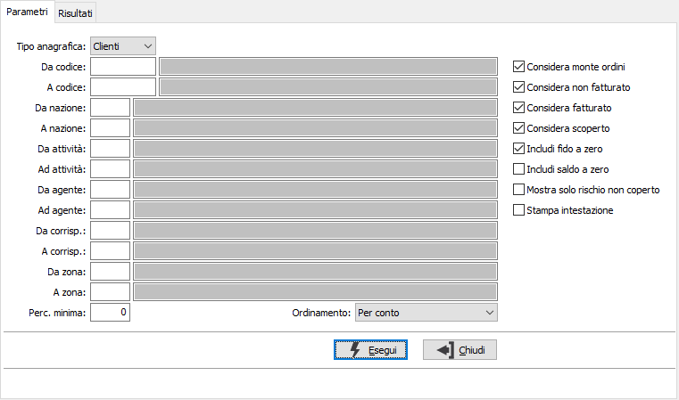
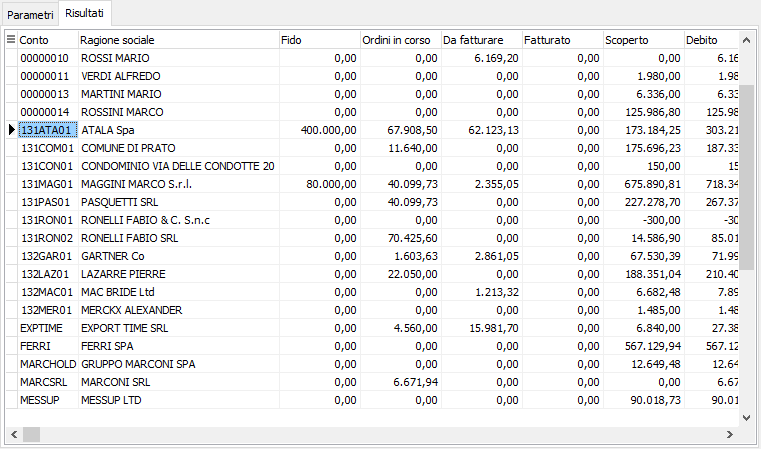
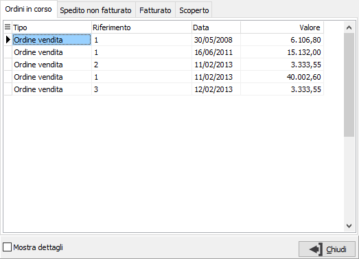
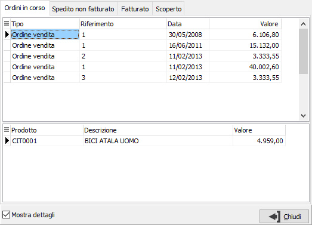

Situazione saldi
Il programma effettua la visualizzazione dei saldi clienti/fornitori in base ai parametri inseriti dall’utente. Una volta visualizzati i saldi, è possibile attivare la stampa utilizzando il bottone Stampa della tool bar.
Il programma si articola su due finestre video. La prima, Parametri, consente la definizione dei parametri di analisi.

I vari limiti presenti consentono di selezionare uno o più clienti/fornitori in relazione a parametri omogenei; ad esempio i clienti della stessa nazionalità.
Indicando la percentuale minima è possibile selezionare solo i clienti/fornitori che eccedono detta percentuale di scostamento tra il fido ed il saldo.
Con i vari check box è possibile includere oppure escludere dal conteggio dei saldi i vari importi, includere o escludere quelli con fido e/o saldo a zero o mostrare solo quelli con rischio non coperto; è infine possibile effettuare un ordinamento per conto oppure per percentuale di scostamento.
Confermando tramite la pressione del bottone Esegui, viene avviata la selezione e richiamata la finestra video Risultati.

La finestra video riporta per ogni cliente/fornitore visualizzato i vari saldi e l'eventuale percentuale di scostamento calcolata in relazione al saldo ed al fido.
Cliccando sui bottoni anteprima di stampa o stampa della tool bar, si avviano le relative funzioni.
Con il doppio clic del mouse sulla riga di un cliente fornitore è possibile visualizzare l’elenco dei documenti che compongono il rischio corrente (suddivisi fra ordini clienti, DDT da fatturare, fatture da contabilizzare, scadenze da saldare); attraverso il doppio click sulla griglia consente l’accesso al documento corrispondente (per le scadenze da saldare è richiamata la manutenzione scadenze).

Per ogni elemento è possibile visualizzare i dettagli (righe ordine da evadere, righe DDT da fatturare, righe fattura, singole rate con il proprio saldo).
